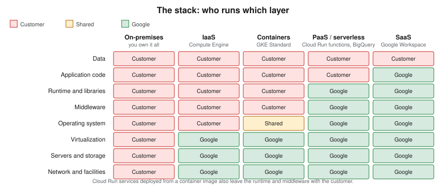
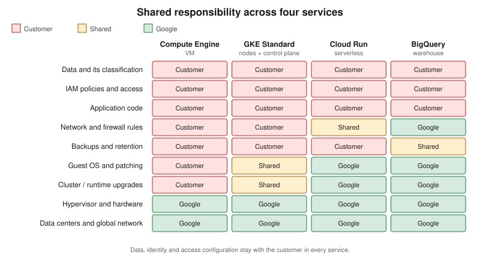

Cloud Concepts
|
This content was generated with the assistance of AI and should be verified against the official documentation before being relied on in production. |
This page is the conceptual foundation for the Cloud / Google Cloud section. It starts with the handful of ideas you meet in your first hour on Google Cloud — scopes, projects, the console, the gcloud CLI, Cloud Shell, client libraries and billing — and then widens out to the general cloud computing material: what cloud computing is, the IaaS/PaaS/SaaS/serverless/container service models, deployment models, the shared responsibility model and Google’s "shared fate" framing, CapEx versus OpEx, and the two frameworks Google publishes to guide design and adoption. It is conceptual, so it has no console or CLI walkthroughs of its own; the later pages act on these ideas with the Google Cloud console and the gcloud CLI (586.0.0, released 2026-09-22, at the time of writing, verified against the official release notes). The same ideas, told for other clouds, are in Cloud Concepts and Cloud Concepts.
The first things to know about Google Cloud
Seven ideas explain most of what you see on the first day. Each is expanded on a later page, linked here.
- Projects are the unit of isolation
-
Every resource lives in exactly one project. A project has a human-readable name you can change, a globally unique project ID you choose once and cannot change, and a numeric project number Google assigns. Billing, quotas, APIs you have enabled and IAM policies are all attached at project level, so a common pattern is one project per application per life-cycle stage (for example development, staging and production). In an enterprise, projects sit under folders inside an organization that carries organization-wide policy. See Resource Hierarchy and Projects.
- Service scopes decide failure domains
-
A resource is zonal (a VM, a zonal disk), regional (a regional cluster, a subnet), multi-regional (a Cloud Storage multi-region bucket) or global (a VPC network, a global load balancer). The scope tells you what a single zone or region outage takes down. See Google Cloud Global Infrastructure.
- A free trial and an Always Free tier exist
-
A new customer gets promotional credit for a limited period after signing up with a billing method, and a set of products has monthly usage that stays free. The amounts and restrictions change, so the current figures are on the dated official page and in Getting Started with Google Cloud.
- The Google Cloud console is the web interface
-
A navigation menu, pinned products, a search bar, the project picker, notifications and a button that opens Cloud Shell. It is the quickest way to explore a service; the CLI and infrastructure as code make the same work repeatable.
- The gcloud CLI is the command-line interface
-
Commands follow the grammar
gcloud <service> <resource> <verb>, for examplegcloud compute instances list.gcloud init, named configurations,--formatand--filterare covered in Getting Started with Google Cloud. Older guides still pair it withgsutil; the current approach for Cloud Storage isgcloud storage, andbqandkubectlremain companion tools for BigQuery and Kubernetes. - Cloud Shell is a browser-based shell
-
A pre-authenticated virtual machine with the gcloud CLI and an editor already installed. Its limits (weekly hours, persistent home directory size, inactivity deletion) are on the official page linked in Getting Started with Google Cloud.
- Client libraries use Application Default Credentials
-
Application code calls services through the Google Cloud client libraries, which find credentials through Application Default Credentials (ADC): an attached service account in the cloud, impersonation or user credentials on a laptop. Older guides download service-account JSON keys; the current approach is attached service accounts and Workload Identity Federation, and new organizations block key creation by default. See Identity and Access.
Billing is attached to projects through a billing account, and most services are metered per second or per request rather than per hour (for example Compute Engine VMs are billed per second after a minimum). Budgets alert but do not cap spend. See Cost Management and Billing.
What cloud computing is
Cloud computing is the on-demand delivery of compute, storage, networking, databases, software and analytics over the internet with pay-as-you-go pricing, instead of buying servers and operating a data center. You call an API or click in a console, and a provider such as Google Cloud hands you capacity within minutes and bills for what you use. Virtualization — carving one physical host into many virtual machines — is a technology the cloud is built on, not the cloud itself: the cloud adds self-service provisioning, elastic scaling, metered billing and a provider that owns and operates the physical layer.
You interact with Google Cloud in four ways, and the rest of the section uses all of them:
-
the Google Cloud console, a web interface (and Cloud Shell, a browser-based shell with the CLI preinstalled);
-
the gcloud CLI, for scripting and repeatable commands;
-
the client libraries (for example the Java libraries imported through the
libraries-bom), for calling services from application code; -
infrastructure as code — Infrastructure Manager, Terraform or Config Connector — for declarative, reviewable deployments (see Infrastructure as Code).
Benefits of cloud computing
Providers describe the benefits in similar terms. Each maps to concrete behaviour you will meet later:
| Benefit | What it means | Where it shows up |
|---|---|---|
Variable instead of fixed expense |
Pay when you consume resources instead of investing before you know the demand. |
Per-second and per-request billing; see Cost Management and Billing. |
Economies of scale |
Aggregated demand from many customers lowers the unit price. |
New machine generations and storage classes; see Compute Engine. |
Capacity that follows demand |
Scale up and down with load rather than sizing for a peak that may never arrive. |
Managed instance groups, Cloud Run autoscaling, GKE; see Cloud Run and GKE Clusters. |
Speed and agility |
New resources are an API call away, cutting provisioning from weeks to minutes. |
Infrastructure as code and managed services; see Infrastructure as Code. |
Less undifferentiated operations work |
Spend effort on what differentiates the business, not on racking and powering servers or patching databases. |
Managed databases such as Cloud SQL. |
A global footprint in minutes |
Deploy to several regions for lower latency and resilience. |
Regions, zones and edge points of presence; see Google Cloud Global Infrastructure and Cloud CDN and Media CDN. |
Two ideas recur in those benefits. Scalability is the ability to add capacity: vertically ("scaling up", a bigger machine, with a ceiling and usually a restart) or horizontally ("scaling out", more instances behind a load balancer). Elasticity is the automated form of horizontal scaling, where capacity follows demand in both directions. High availability comes from redundancy across zones; it is measured in practice by the recovery time objective (RTO) and recovery point objective (RPO) you actually achieve in an incident.
Service models
- IaaS (Infrastructure as a Service)
-
The provider supplies virtual machines, networks and storage; you manage the operating system upward — patching, runtime, middleware, application and data. Closest to running your own hardware: the most control and the most operational responsibility. Example: Compute Engine (see Compute Engine).
- PaaS (Platform as a Service)
-
The provider also manages the operating system, runtime and often the engine; you deploy code or data and tune the platform’s settings. Examples: Cloud SQL (a managed database engine) and App Engine — see Cloud SQL and Choosing a Compute Service.
- SaaS (Software as a Service)
-
The provider runs the entire application and you configure it and supply data. Example: Google Workspace.
- Serverless
-
You supply only code or a container; the platform provisions, scales (including to zero) and bills per request or per use. Cloud Run and Cloud Run functions are the canonical case (see Cloud Run and Cloud Run Functions and Events), alongside services such as BigQuery, Firestore and Cloud Storage whose capacity you never provision as servers.
- Containers
-
You supply a container image and the platform schedules it. Google Kubernetes Engine (GKE) runs containers on node pools you configure in Standard mode or on nodes Google manages entirely in Autopilot mode (see GKE Clusters); Cloud Run runs a container without any cluster at all.
Each step toward SaaS trades control for lower operational effort. The boundary is a continuum rather than five boxes: GKE Standard, GKE Autopilot, Cloud Run and BigQuery each sit at a different point. Which compute service to start with is the subject of Choosing a Compute Service.

Deployment models
- Public cloud
-
Applications run on a provider’s infrastructure, shared at the virtualization layer with other customers and logically isolated — for example in a VPC network. Applications are either built in the cloud from the start or migrated to it.
- Private cloud
-
Infrastructure dedicated to one organization, usually in its own data center, with virtualization and self-service tooling layered on top. Maximum control, with the full operational burden retained.
- Hybrid cloud
-
A deliberate mix: sensitive or latency-bound workloads stay on premises while others run on Google Cloud, connected by Cloud VPN or Cloud Interconnect (see VPN and Hybrid Connectivity).
- Multi-cloud
-
Using more than one public provider to reduce lock-in or reach different footprints, at the price of duplicated tooling and skills. Open interfaces such as Kubernetes, PostgreSQL and Terraform make workloads easier to move. The Bookshelf scenario used throughout this section is also implemented on Azure and AWS, so you can compare the three side by side.
Choosing a model comes down to compliance and data-residency requirements, latency to users or machinery, existing investment in hardware, and the skills available to operate each environment.
The shared responsibility model and shared fate
Google describes security as a shared responsibility. Google is responsible for security of the cloud: the facilities, the hardware, the global network and the software layer that virtualizes them. The customer is responsible for security in the cloud: everything they put on top and how they configure it. What moves with the service type is the line in between, and it moves along the same continuum as the service models above.
-
Compute Engine (IaaS). You patch the guest operating system, install and update software, configure firewall rules and decide who may log in. Google secures the host, the hypervisor and the data center.
-
GKE (containers). In Standard mode Google operates the control plane and provides the node operating system image, while you choose node pool configuration, upgrade timing and the workloads and policies inside the cluster. In Autopilot mode Google also manages the nodes, so the patching of the node operating system is no longer yours. In both you own the container images, Kubernetes RBAC and network policies.
-
Cloud Run (serverless). Google manages the servers, the operating system and the platform; you own the container image or function code, its dependencies, the service account’s permissions and who may invoke the service.
-
BigQuery (managed warehouse). Google runs the engine entirely; you own the datasets, the IAM and column- or row-level policies on them, and what is loaded and shared.
Data, identity and access configuration stay with the customer in every model, including SaaS. Misconfigured identity or a publicly readable bucket is a customer-side failure that no provider-side investment can offset; see Identity and Access and Cloud Storage Security and Static Sites.

Google also uses the term shared fate. Shared responsibility divides the duties and stops there; shared fate adds that Google helps you succeed on your side of the line, with secure blueprints and landing-zone guidance, defaults that are secure out of the box (for example the secure-by-default organization policies applied to organizations created since 2024-05-03) and governance tools. It is a statement of intent about product design rather than a change to who is accountable for configuration, so treat it as a reason to adopt the defaults rather than as a transfer of responsibility. Organization policies and the tools that detect misconfiguration are in Governance, Security and Compliance.
Defence in depth
Because no single control is sufficient, security is layered: edge protection (Cloud Armor, load balancers), network filtering (VPC firewall rules, VPC Service Controls), compute hardening (patching, least-privilege service accounts), data protection (Cloud KMS encryption, Secret Manager) and monitoring and detection (Cloud Logging, audit logs, Security Command Center). Each layer assumes the one before it can fail. The layers are covered in VPC Networking on Google Cloud, Secret Manager and Cloud KMS and Monitoring and Observability.
CapEx vs. OpEx, TCO and pricing
Running your own data center is capital expenditure (CapEx): large upfront purchases, depreciated over years and sized for a peak that may not arrive. Cloud consumption is operating expenditure (OpEx): a variable cost that follows usage, with nothing to buy upfront and nothing to dispose of. Google Cloud bills most services per second or per request, per gigabyte stored or per query, and a deleted resource stops accruing charges (apart from items kept after deletion, such as retained backups, soft-deleted objects and secret versions, which are billed until they expire or are removed).
Related cost concepts:
-
Total cost of ownership (TCO). A fair comparison with on-premises includes hardware, facilities, power, networking, staff and software licences, not only the server price. The Google Cloud Pricing Calculator estimates the Google Cloud side.
-
Rightsizing. Matching machine size to measured utilisation; Google publishes rightsizing recommendations from monitoring data. Over-provisioning is the cloud version of buying for peak.
-
Commitments and discounts. Committed use discounts trade flexibility for a lower rate once usage is predictable; Spot VMs offer deep discounts for interruption-tolerant work, and some services apply sustained or automatic discounts.
-
Free tier. A set of products has a monthly allowance that stays free; see Getting Started with Google Cloud.
Current prices change, so this section never quotes them; use the dated official pricing pages and the Pricing Calculator. Cost drivers, budgets, labels and billing export are in Cost Management and Billing.
The Google Cloud Well-Architected Framework
The Well-Architected Framework, part of the Google Cloud Architecture Center, describes recommendations for designing and operating workloads. It has a foundational system design category and six pillars:
| Pillar | Question it asks |
|---|---|
Operational excellence |
Can you deploy, operate, monitor and manage the workload efficiently? |
Security, privacy and compliance |
Are data and workloads protected, is privacy designed in, and do you meet regulatory requirements? |
Reliability |
Is the workload resilient and highly available, and does it recover from failure? |
Cost optimization |
Do you maximise the business value of the investment in Google Cloud? |
Performance optimization |
Are resources designed and tuned for the required performance? |
Sustainability |
Are workloads built and managed to be environmentally sustainable? |
Cross-pillar perspectives add guidance for specific domains such as AI and machine learning workloads. Use the pillars as a review checklist for each Bookshelf service you build in later pages: for example reliability points to regional resources and health-checked instance groups, while cost optimization points to scaling to zero and labelling resources.
The Google Cloud Adoption Framework
The Google Cloud Adoption Framework helps an organisation assess where it stands and plan its move to the cloud. It is organised around four themes — Learn (skills and knowledge), Lead (leadership support and cross-team collaboration), Scale (using cloud services efficiently and automating operations) and Secure (protecting the environment) — and three maturity phases: tactical, strategic and transformational. Where Well-Architected reviews one workload, the Adoption Framework looks at the organisation. Landing-zone design — the folder and project structure and baseline policies that result from the Lead and Secure themes — starts in Resource Hierarchy and Projects.
Example architectures
Google documentation repeatedly returns to a handful of patterns; they recur in this section.
-
Web shop. A global load balancer in front of a serverless or containerised front end, a managed relational database for orders and an object store for images, behind a CDN. Scale the web tier horizontally and put sessions in a cache.
-
Private-network application. An internal business app reachable only through a VPN or Identity-Aware Proxy, with databases on private IP addresses and no public addresses (see VPC Networking on Google Cloud).
-
Highly available system. Instances and database replicas spread across at least two zones with automatic failover (see Google Cloud Global Infrastructure).
-
Batch on Spot capacity. Interruption-tolerant jobs on discounted VMs, fed from a queue (see Messaging and Integration).
-
Event-driven serverless. Functions or services triggered by Pub/Sub messages or uploads, with no servers to manage (see Cloud Run Functions and Events).
The running scenario, Bookshelf (a static front end, a catalog-api, an orders-api and a notifier worker that
sends confirmation emails), combines several of these.
Where to go from here
| Concept | Google Cloud services and pages |
|---|---|
Getting an account and tooling |
|
Regions, zones, edge locations |
|
Projects, folders and guardrails |
|
Identity, least privilege and temporary credentials |
|
Infrastructure as code |
|
IaaS, containers, serverless compute |
Choosing a Compute Service, Compute Engine, Cloud Run, GKE Clusters |
Managed data services (PaaS) |
|
Security of data and secrets |
Secret Manager and Cloud KMS, Governance, Security and Compliance |
Pricing, TCO and budgets |
|
Developer tooling and CI/CD |
|
Analytics and AI |